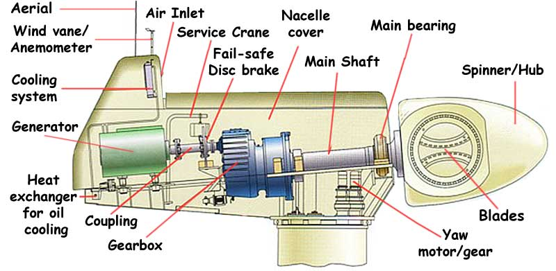
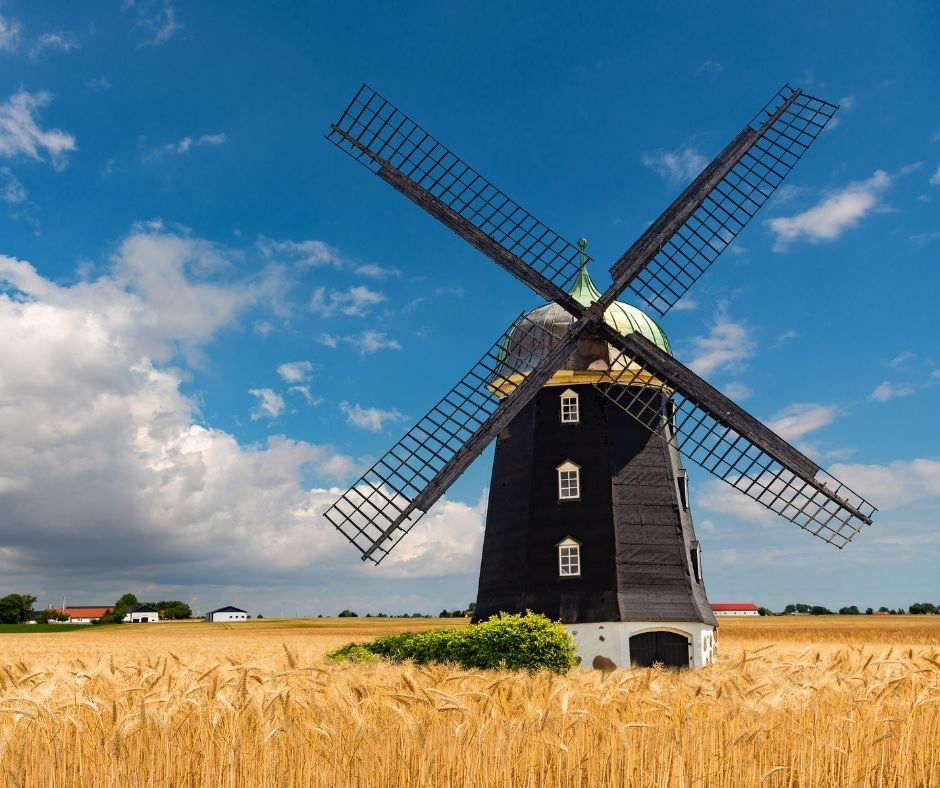

Wind Power
|  |
Basics of Wind PowerWind power is the use of the wind to generate electricity. Typically, this means using a turbine which is rotated by the wind moving across its vanes. Wind energy, unlike most other sources of renewable energy relies solely on converting kinetic energy to electric current. In addition, wind power has the lowest net greenhouse gas emissions and the most favorable social outlook of all renewable and traditional energy sources. Wind power is gathered by a turbine, which can come in many different shapes, sizes and designs. The above image is a cutaway of the most common kind of offshore wind turbine, a HAWT. This kind of turbine is typically around 120 meters tall and has three 80 meter blades. They generate roughly 8 MW per turbine and can be placed in "wind farms" of hundreds of turbine towers. |
|||||||||||||||||||||||||||||||||||||||||||||||||||||||||||||||||||||||||||||||||||||||||||||||||||||||||||||||||||||||||||||||||||||||||||||||||||||||||||||||||||||||||||||||||||||||||||||||||||||||||||||||||||||||||||||||||||||||||||||||||||||||||||||||||||||||||||||||||||||||||||||||||||||||||||||||||||||||||||||||||||||||||||||||||||||||||||||||||||||||||||||||||||||||||||||||||||||||||||||||||||||||||||||||||||||||||||||||||||||||||||||||||||||||||||||||||||||||||||||||||||||||||||||||||||||||||||||||||||||||||||||||||||||||||||||||||||||||||||||||||||||||||||||||||||||||||||||||||||||||||||||||||||||||||||||||||||||||||||||||||||||||||
WindmillsOne of the older applications for wind power is the windmill. Instead of generating electricity, these structures used the rotation of their blades to turn a millstone and process grain into flour. |
||||||||||||||||||||||||||||||||||||||||||||||||||||||||||||||||||||||||||||||||||||||||||||||||||||||||||||||||||||||||||||||||||||||||||||||||||||||||||||||||||||||||||||||||||||||||||||||||||||||||||||||||||||||||||||||||||||||||||||||||||||||||||||||||||||||||||||||||||||||||||||||||||||||||||||||||||||||||||||||||||||||||||||||||||||||||||||||||||||||||||||||||||||||||||||||||||||||||||||||||||||||||||||||||||||||||||||||||||||||||||||||||||||||||||||||||||||||||||||||||||||||||||||||||||||||||||||||||||||||||||||||||||||||||||||||||||||||||||||||||||||||||||||||||||||||||||||||||||||||||||||||||||||||||||||||||||||||||||||||||||||||||||
SafetyWind power is one of the safest power generation option available to humanity. It provides no threat to people and is exceptionally reliable. It operates regardless of the weather and can also produce power at night, unlike solar power. |
||||||||||||||||||||||||||||||||||||||||||||||||||||||||||||||||||||||||||||||||||||||||||||||||||||||||||||||||||||||||||||||||||||||||||||||||||||||||||||||||||||||||||||||||||||||||||||||||||||||||||||||||||||||||||||||||||||||||||||||||||||||||||||||||||||||||||||||||||||||||||||||||||||||||||||||||||||||||||||||||||||||||||||||||||||||||||||||||||||||||||||||||||||||||||||||||||||||||||||||||||||||||||||||||||||||||||||||||||||||||||||||||||||||||||||||||||||||||||||||||||||||||||||||||||||||||||||||||||||||||||||||||||||||||||||||||||||||||||||||||||||||||||||||||||||||||||||||||||||||||||||||||||||||||||||||||||||||||||||||||||||||||||
Environmental ImpactIn terms of environmental effects, wind power is very low impact. The land use of a conventional HAWT installation is very low; less than an acre of land is permanently disturbed by the turbine itself. And the land around a turbine is largely untouched and can be used for livestock grazing, hiking and/or agriculture. Wind power uses no water to produce electricity. While bird and bat collisions are possible, they are very infrequent and pose little to no threat to overall populations. To mitigate possible collisions, turbines can be left off during times of lower wind speed. And choosing sites with low bird/bat traffic further reduces wildlife casualties. Offshore wind farms can have similar impacts on marine bird populations. However, they can have positive impact on fish populations because they can act as artificial reefs. Wind turbines can generate sound and other vibrations that many may find annoying or disruptive. This sound is mostly due to the aerodymaics of the blades. To mitigate this, most designers specify sound dampening materials and blade shape intended to minimize vibrations. |
||||||||||||||||||||||||||||||||||||||||||||||||||||||||||||||||||||||||||||||||||||||||||||||||||||||||||||||||||||||||||||||||||||||||||||||||||||||||||||||||||||||||||||||||||||||||||||||||||||||||||||||||||||||||||||||||||||||||||||||||||||||||||||||||||||||||||||||||||||||||||||||||||||||||||||||||||||||||||||||||||||||||||||||||||||||||||||||||||||||||||||||||||||||||||||||||||||||||||||||||||||||||||||||||||||||||||||||||||||||||||||||||||||||||||||||||||||||||||||||||||||||||||||||||||||||||||||||||||||||||||||||||||||||||||||||||||||||||||||||||||||||||||||||||||||||||||||||||||||||||||||||||||||||||||||||||||||||||||||||||||||||||||